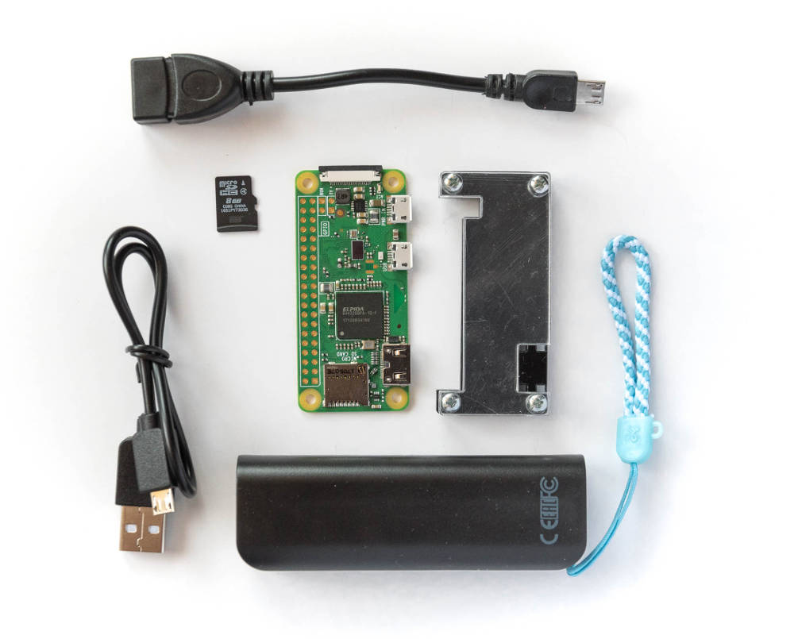
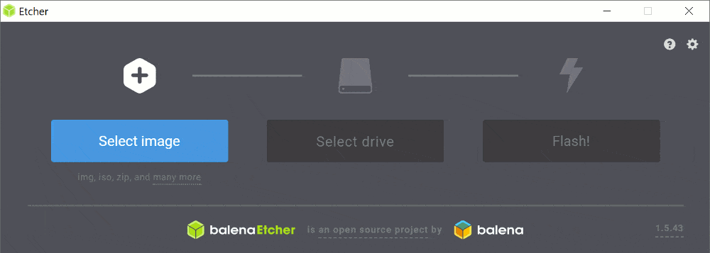
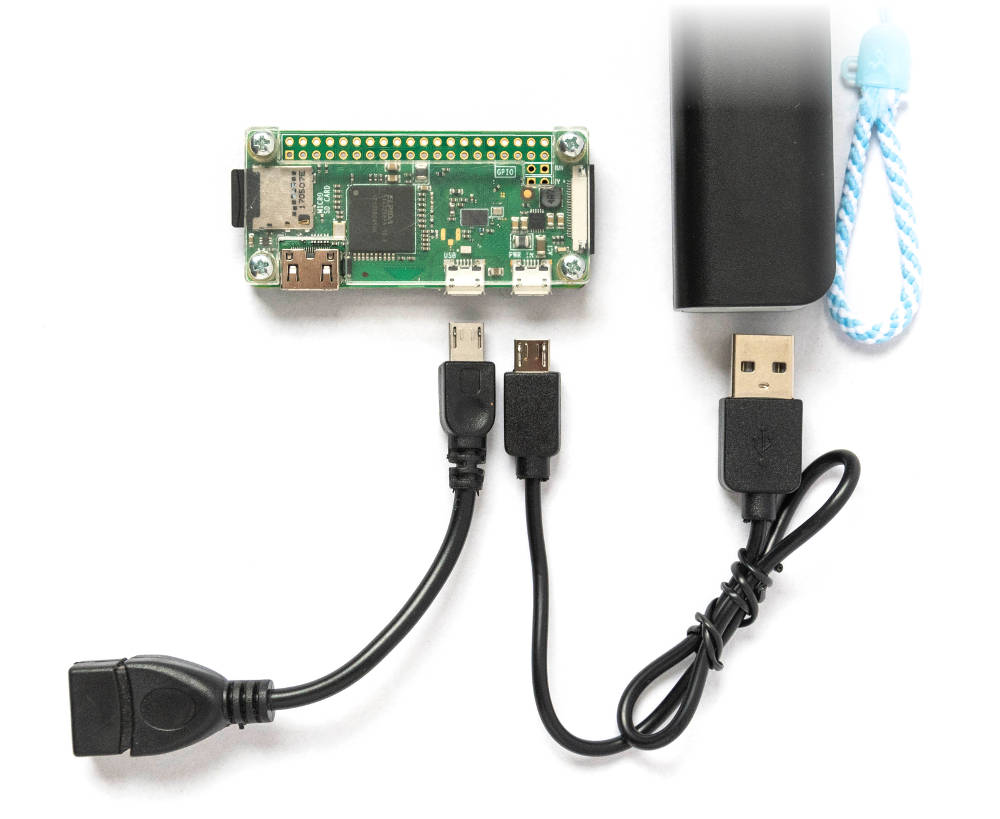
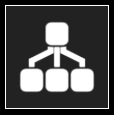

Cheap WiFi adapter for older cameras
DIY WiFi adapter for qDslrDashboard app (supports Nikon, Canon and Sony
cameras).
The app works on Android, iOS, Mac, Windows and Linux and provides:
- remote live view,
- shutter release,
- focus stacking,
- interval timer,
- day-to-night timelapse tools,
- and more.
See qDslrDashboard's website for all features and documentation.
What do I need to buy?

| Part | Price |
|---|
| a Raspberry Pi Zero W
(the "W" means WiFi) |
$10-15 |
| a small case for the Raspberry Pi | $5 |
| a 4 GB microSD card, doesn't have to be fast | $4 |
| a USB OTG adapter cable | $3 |
| a small size powerbank
(3000-4000mAh for normal use, 8000mAh or more for heavy use) |
$5-10 |
| a USB cable for your camera
(should come in the box) | — |
| the qDslrDashboard app | $10 |
The prices are going to differ between countries but the total cost should
be around $50, unless you opt for a bigger and more expensive battery.
For preparing the microSD card you will also need access to:
- a PC or Mac (with 500MB free disk space, temporarily),
- a microSD card reader (or an SD card reader and an adapter),
- Internet access to download a 500MB large file.
Putting it all together - TL;DR
In short, you need to do four simple things:
- Download the preconfigured software and put it on a microSD card.
- Install the Raspberry Pi in its case and insert the microSD card in the
slot.
- Attach cables to the Raspberry Pi: powerbank to the power port and the
OTG to the USB port, your camera cable to the OTG adapter,
- Buy and install qDslrDashboard (ControlMyCamera if you're using iOS) on
your phone or tablet.
The Raspberry Pi creates its own WiFi network
(CameraWifi with password: CameraControl).
Each time it starts you need to connect your mobile device to this
network, start qDslrDashboard and connect to the camera.
Putting it all together - step by step
Prepare a microSD card for Raspberry Pi

- Download the SD card image file.
- Download and install
balenaEtcher
app on your computer.
- Use balenaEtcher to write the system image to your SD card:
- Open balenaEtcher.
- Drag the downloaded
camera-wifi.zip file to the
Select image area of the app (it can automatically unzip the file).
- Insert a microSD card to your computer's card reader.
- Click "Flash" to write the image to the card.
All data on the card will be deleted.
Assemble the parts

- Insert the microSD card in the Raspberry Pi's card slot.
- Put the Raspberry Pi in its case.
- Attach cables:
- OTG cable goes to the USB port on the Raspberry (to the left on the photo above),
- Camera USB cable connects the OTG cable and the camera,
- Power USB cable connects to the PWR port on the Raspberry and the
powerbank.
- Attach the Raspberry Pi to the powerbank with some tape or velcro.
Buy and install qDslrDashboard
- Android
- search for qDslrDashboard in the Play Store
- iOS
- search for ControlMyCamera in the Apple Store
- laptops
- there are download links on the app's website
Disclaimer: I'm not the author of qDslrDashboard and I'm in no way
affiliated with the app's author. I just think it provides a great way to
add WiFi to older cameras and I've created this guide to help other users.
How to use it
There is no power button on the Raspberry, connecting the powerbank cable
works as a power switch.
- Attach the Rasbperry Pi to your camera with the OTG and USB cable.
- Attach the Raspberry Pi to the powerbank to start it. Give it 20-30s
to start.
- Open WiFi settings on your smartphone and connect to the WiFi of the
Raspberry Pi:
Network: CameraWiFi
Password: CameraControl.
-
Start the qDslrDashboard app (ControlMyCamera on iOS) and tap the
Network button (regardless of your camera brand).

- The app should automatically connect to the camera within 5s.
Have fun!
(the instructions above also work if you're running qDslrDashboard on a laptop)
Cleanup
Now that you've tested that everything works you can delete the downloaded
camera-wifi.zip file.